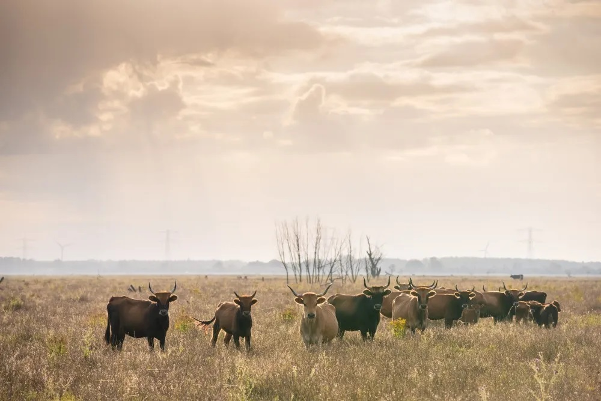
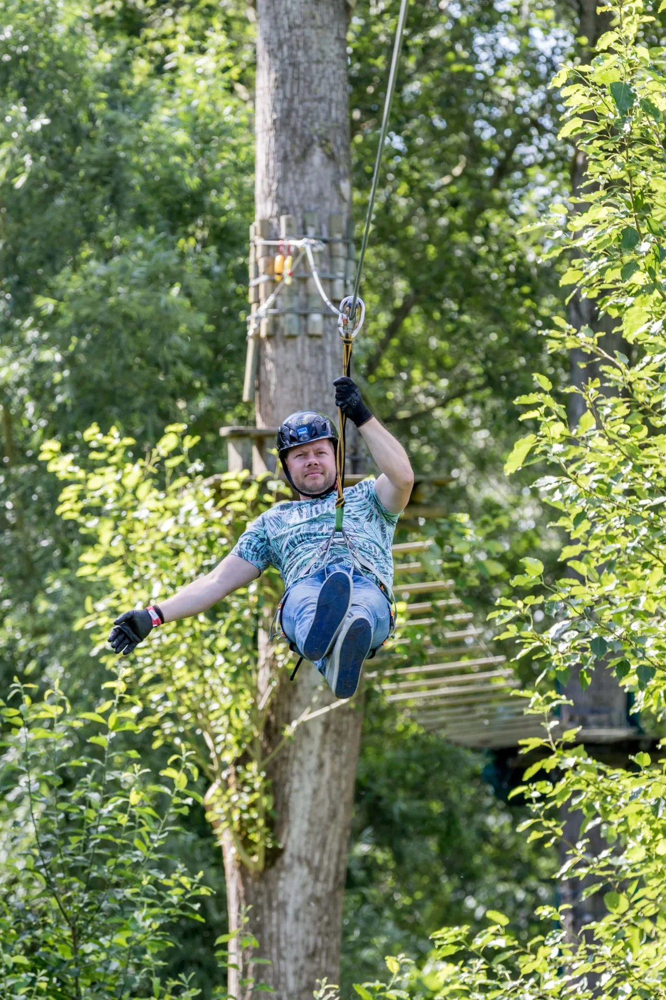

Tussen Almere en Lelystad ligt het bijzondere natuurgebied de Oostvaardersplassen, hier bepaalt de natuur het ritme. Het moerasgebied is rijk aan verschillende vogelsoorten en unieke grazers. Het gebied is onderdeel van Nationaal Park Nieuw Land en bezit over parkeerplaatsen, fiets- en looppaden. Even uitrusten kan in het gezellige paviljoen in het Natuurbelevingcentrum De Oostvaarders aan de kant van Almere of bij het Buitencentrum in Lelystad. In beide bezoekerscentra zijn verrekijkers aanwezig om de dieren in het natuurgebied te bekijken. Zelf op pad? Dat kan! Fiets een Rondje Oostvaardersplassen of bewandel de Hans Prins Route door het gebied.
 Bij Fun Forest in Almere kun je kiezen uit verschillende activiteiten. Hier heb je zeker een uniek en uitdagend uitje. Uiteraard is ook een combinatie van het onderstaande mogelijk (vanaf 8 personen): Klimmen in het Fun Forest of Teambuilding op het veld. Het Klimpark Fun Forest Almere heeft 8 verschillende routes! Door de opbouw in moeilijkheidsgraad, is het klimpark interessant voor zowel jong en oud. Iedere route begint en eindigt met een tokkelbaan, waarbij je door de bossen en over het water zweeft. Kinderen kunnen er al vanaf 8 jaar (vanaf een lengte van 1.30 meter) komen klimmen, in dat geval wel onder begeleiding van een volwassene. Het klimmen bij Klimpark Fun Forest duurt circa 3 uur. Speciaal voor kinderen tussen de 8 en 11 jaar is er het Monkey parcours, een 4 meter hoog parcours dat verboden is voor volwassenen. Ideaal voor een kinderfeestje!